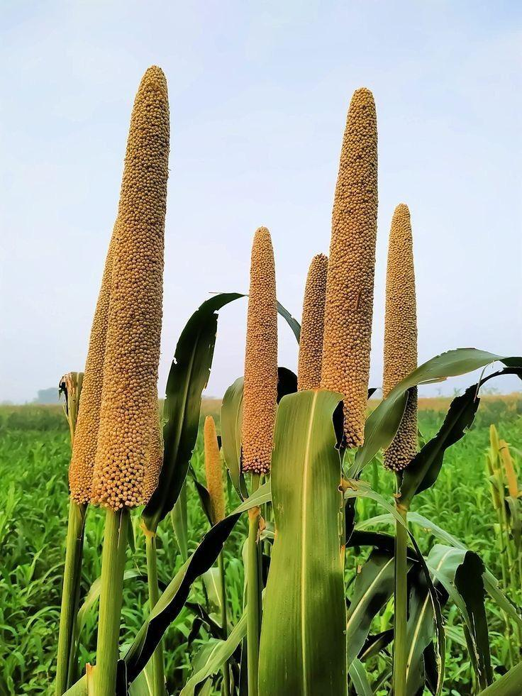

Le mil est une céréale très résistante à la sécheresse, largement cultivée en Afrique. Il s’adapte bien aux climats chauds et aux sols peu fertiles. La récolte se fait généralement 3 à 4 mois après le semis. Riche en fibres, en vitamines et en minéraux, le mil est utilisé pour préparer du couscous, des bouillies, des galettes et d’autres plats traditionnels. Le semis se fait de Juin à Juillet, dès les premières pluies. La récolte a lieu entre Octobre et Novembre. Les variétés améliorées UCAB les plus utilisées sont Souna 3, Chakti et GB8735, qui permettent de doubler les rendements par rapport aux variétés locales.